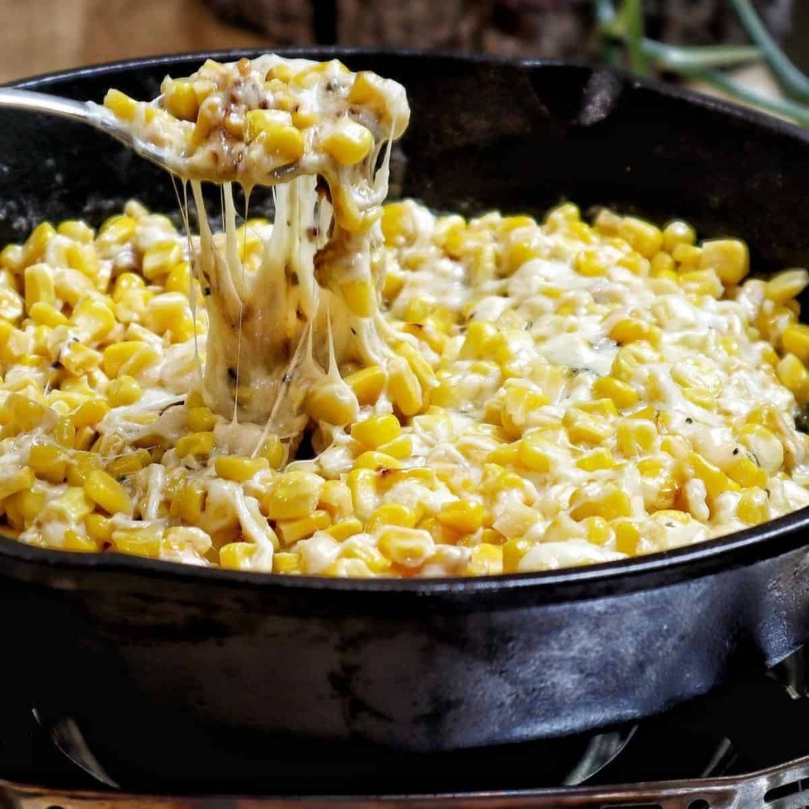

Korean Corn Cheese

A Dip With All You Want: Corn and Cheese
This delicious dip has few ingredients and is quick and easy to make, but you may find it also disappears quickly. Cheese and corn never let me down, and this dish has all the hearty, comforting goodness you'd expect.
Ingredients
- 2 cups fresh sweet corn kernels removed and cobs discarded
- 1 1/2 cup mayonnaise
- 4 ounces shredded mozzarella
- 1 1/2 teaspoons sugar
- 2 green onions, thinly sliced
- Salt and pepper to taste
Steps
- Preheat oven to 400 degrees F.
- Combine all ingredients into a mixing bowl and stir together.
- Pour mixture into a lightly greased baking dish.
- Bake for 10 minutes or until mixture melts and bubbles.
- Transfer dish to broiler and broil for 2 minutes or until top is browned.
- Serve immediately.